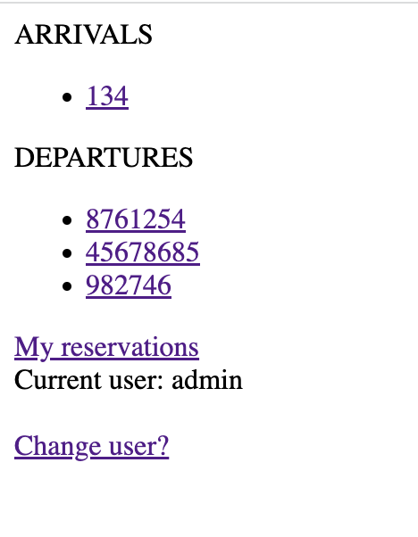
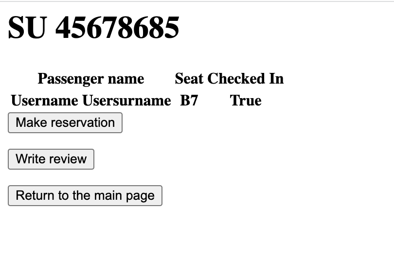
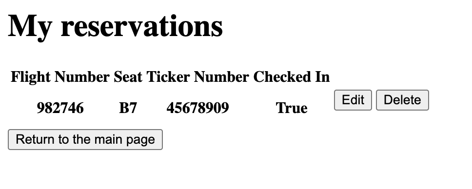

Представления
Домашняя стрaница с рейсами Все предстоящие рейсы, на которые можно забронировать место
def index(request):
flight_list: QuerySet[Flight] = Flight.objects.order_by("id")[:10]
return render(request, 'index.html', {'flight_list': flight_list})
HTML-код для отображения рейсов
{% if flight_list %}
<p>ARRIVALS</p>
<ul>
{% for flight in flight_list %}
{% if flight.type == 'ARR' %}
<li><a href="/airport/{{ flight.id }}/">{{ flight.flight_number }}</a></li>
{% endif %}
{% endfor %}
</ul>
<p>DEPARTURES</p>
<ul>
{% for flight in flight_list %}
{% if flight.type == 'DEP' %}
<li><a href="/airport/{{ flight.id }}/">{{ flight.flight_number }}</a></li>
{% endif %}
{% endfor %}
</ul>
{% else %}
<p>No flights are currently arriving or departing.</p>
{% endif %}
{% if request.user.is_authenticated %}
<a href="http://127.0.0.1:8000/airport/list_reservations/">My reservations<br></a>
<a>Current user: {{ request.user.username }}</a>
{% endif %}
<br><br>
{% if request.user.is_authenticated %}
<a href="http://127.0.0.1:8000/login/">Change user?<br></a>
{% endif %}

Возврат на стартовую страницу
def home_redirect(request):
return redirect('/airport')
Информация о конкретном рейсе
def flight_info(request, flight_id):
flight: Flight = get_object_or_404(Flight, pk=flight_id)
dtos = []
for passenger in flight.passengers.all():
dtos.append(PassengerDTO(
passenger.first_name + ' ' + passenger.last_name,
Reservation.objects.filter(passenger=passenger.id).get().seat_number,
Reservation.objects.filter(passenger=passenger.id).get().checked_in
))
return render(request, 'flight_info.html', {
'dtos': dtos,
'flight_number': flight.flight_number,
'flight_id': flight.id
})

Информация о ваших бронированиях
def list_reservations(request):
if request.user.is_authenticated:
reservations = Reservation.objects.filter(passenger=request.user.id)
return render(request, 'reservation_list.html', context={'reservations': reservations})
else:
return HttpResponse('Please sign in to view your reservations.')
А также удаление этих бронирований
def delete_reservation(request, reservation_id):
if request.user.is_authenticated:
get_object_or_404(Reservation, pk=reservation_id).delete()
return redirect('/airport/list_reservations')
else:
return HttpResponse('Please sign in to manage your reservations.')
